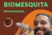

Rayssa Caroline de Campos
Meu nome é Rayssa Caroline de Campos, tenho 17 anos e sou uma pessoa que valoriza muito a família, o amor e os momentos simples da vida. Gosto de jogar futebol, assistir séries, ouvir música e passar tempo com as pessoas que amo. Sou sonhadora, carinhosa e determinada, sempre buscando dar o meu melhor em tudo o que faço. Tenho um grande interesse por áreas ligadas à natureza e à ciência, e sonho em trabalhar com algo que envolva o meio ambiente ou em um laboratório, unindo minhas paixões por descobertas e cuidado com o planeta.
No próximo ano, quero me dedicar ainda mais aos estudos, me preparar para escolher a profissão que quero seguir e começar a traçar o caminho para o meu futuro. Também quero continuar praticando futebol, passar mais tempo com minha família e fortalecer ainda mais meu relacionamento, sempre crescendo junto com as pessoas que amo.
Daqui a 5 anos, me imagino cursando uma faculdade na área que eu amo — algo relacionado à natureza ou à área de laboratório. Quero estar trabalhando ou estagiando, ganhando experiência e construindo minha independência. Também espero continuar no meu relacionamento, pois sonho em me casar com ele e começar uma nova etapa da minha vida com muito amor e companheirismo.
Meu maior sonho é ter uma carreira sólida e gratificante, trabalhando com algo que realmente faça diferença no mundo. Também sonho em ter uma vida tranquila, próxima da natureza, cercada pela minha família e pelas pessoas que amo. Quero viajar, conhecer lugares novos, viver momentos únicos e, acima de tudo, ser feliz e realizada em todas as áreas da minha vida.
Matheus Silva Mesquita (Biomesquita)
A minha admiração decorre da sua notável dedicação em articular a educação ambiental com a ação prática e a conscientização, especialmente no contexto de unidades de conservação. É particularmente motivadora a maneira como ele aborda a inter-relação entre sociedade e ambiente, destacando a importância de práticas educativas para a conservação e o desenvolvimento sustentável. Seus trabalhos demonstram um foco em projetos de intervenção que geram um impacto tangível e isso representa uma referência de excelência para mim. No que concerne ao caminho profissional que almejo seguir, tenho um forte ímpeto para atuar em uma á rea voltada para a natureza, reconhecendo a urgência de sua preservação. Contudo, neste momento, ainda não tenho certeza sobre qual especialidade ou subárea específica irei aprofundar. Estou explorando as diversas vertentes das Ciências Ambientais, da Ecologia e da Gestão de Recursos Naturais, buscando aquela que melhor me permitirá aplicar o aprendizado e o foco em resultados práticos que me inspira em Matheus Silva Mesquita